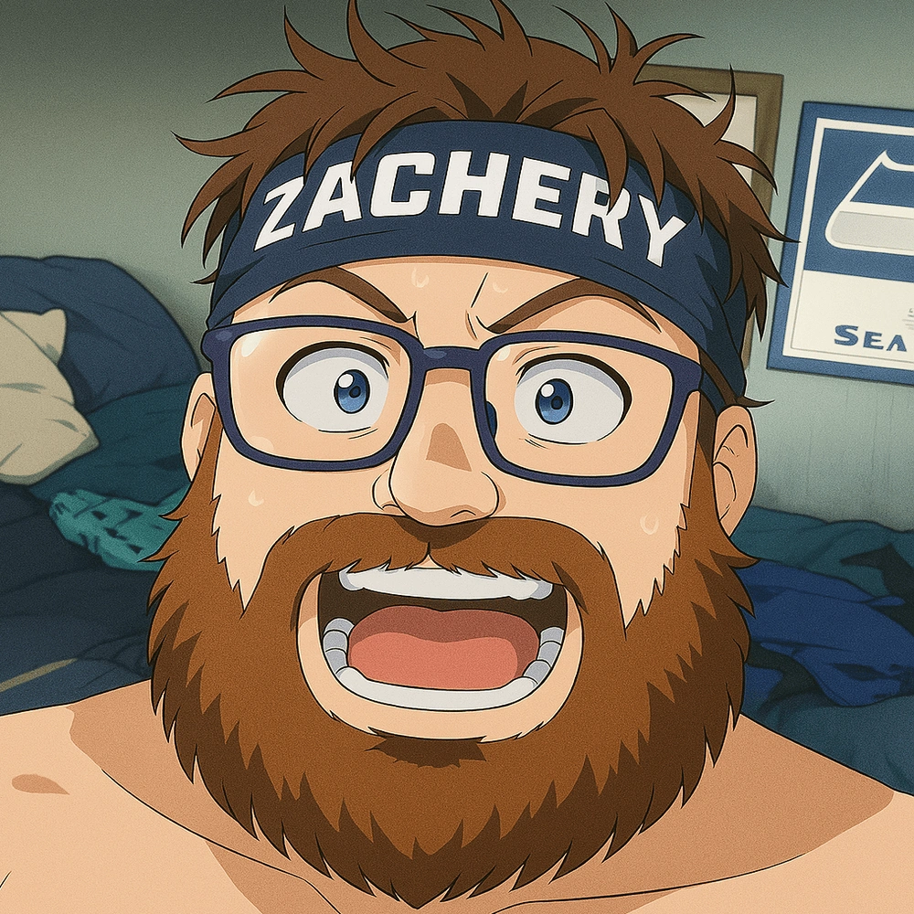

Brn2bEw1Ld
I am a follower of Christ who is passionate about gaming and is an aspiring Nurse in training. I want to take part in building a community that is centered around faith in Christ, that values growth, and is wanting to have a good time. Faith in Christ is apart of who I am as a person and as a gamer, and even though this is a gaming channel, I am not afraid or ashamed to share Christ with encouragement sharing in real-life struggles and what that journey looks like of trying to grow in Christ daily.
Top 4 Games Streamed


Live Stream Status
Checking status...Please wait while we check whether Brn2bEw1Ld is live.
Featured Video
Check out my other videos above!
Streaming Schedule
This calendar reflects the Brn2bEw1Ld Gaming streaming and event schedule. Times may shift — join Discord for live updates.
This Calender is set to Eastern Standard Time (ET) UTC-5
Testimony
For the longest time I really thought I had a relationship with Jesus and was a born again Christian since I was a child. Yet all my life I always lived with the I don't want to fully commit to being a Jesus freak so to speak, or having one foot in the door and one foot out the door in a sense. I had gone to church my whole life and my faith was based on major unbelief. It was not until I joined Faith Forge Gaming back in January of 2026 and starting going to their bible studies that I was confronted with a harsh reality of my false testimony of salvation and that I had never truly embraced filling the God shaped whole in my life, that lead to the life altering, mind changing, God fearing change in my life. I have always been passionate about God and Jesus, yet never truly understood or grasped the reality of letting him in and giving my heart and mind the makeover it desperately needed. It was such a gut wrenching experience because I had lived for over 30 plus years believing something that was just fundamentally so backwards and living in the flesh that I was not truly following Jesus. Embracing that relationship and allowing him to come into my heart and completely change how I think, talk, eat, drink, sleep. Literally everything in my life now has been overturned and is being dealt with from the Holy Spirit that I can now with confidence say and admit that I am a Jesus Freak ha-ha.
Favorite Bible Verse
“Have I not commanded you? Be strong and courageous! Do not tremble or be dismayed, for the Lord your God is with you wherever you go.”
— Joshua 1:9